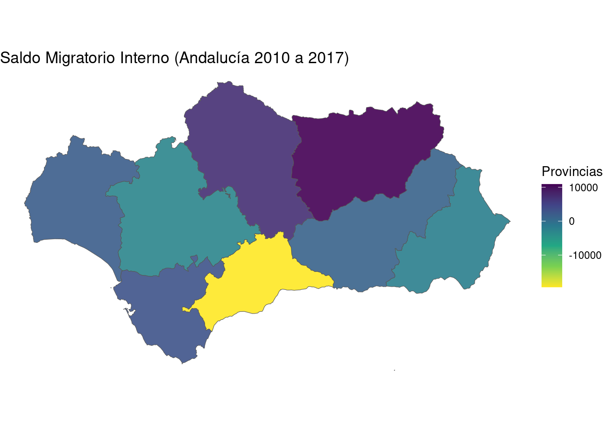
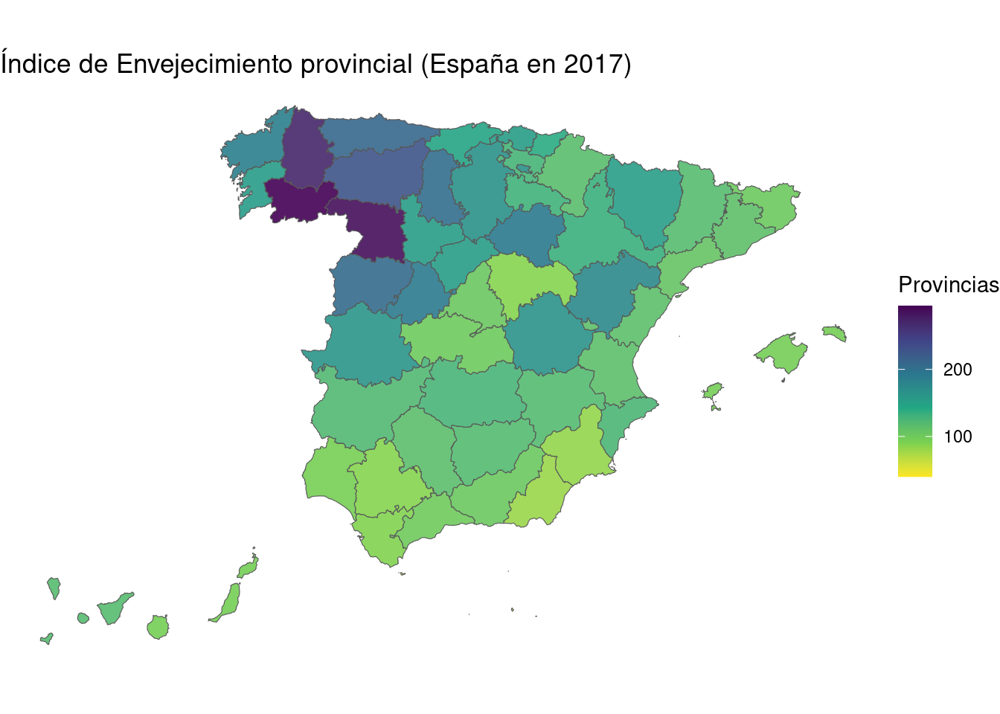

suppressWarnings(suppressMessages(library(DemographyBasic)))Práctica 4: Parte 4 (Mapas Demográficos)
1 Introducción
2 Instalación de mapSpain
Información obtenida:
Se recomienda utilizar la siguiente instrucción R para instalar el paquete R: “mapSpain”.
install.packages("mapSpain", dependencies = TRUE)El primer ejemplo que se mostrará se ha obtenido del modelo de partida obtenido en la documentación de “mapSpain”: https://ropenspain.github.io/mapSpain/articles/x02_mapasesp.html.
Cargamos los paquetes necesarios y utilizamos la función esp_get_prov_siane() para obtener información para la representación de mapas de tipo provincial de España para unas determinadas provincias.
library(mapSpain)
library(ggplot2)
provs <- esp_get_prov(c(
"Andalucía", "Ciudad Real",
"Murcia", "Ceuta", "Melilla"
))
dplyr::glimpse(provs)Rows: 12
Columns: 24
$ codauto <chr> "01", "01", "01", "01", "01", "01", "01", "01", "08"…
$ cpro <chr> "04", "11", "14", "18", "21", "23", "29", "41", "13"…
$ iso2.prov.code <chr> "ES-AL", "ES-CA", "ES-CO", "ES-GR", "ES-H", "ES-J", …
$ nuts.prov.code <chr> "ES611", "ES612", "ES613", "ES614", "ES615", "ES616"…
$ ine.prov.name <chr> "Almería", "Cádiz", "Córdoba", "Granada", "Huelva", …
$ iso2.prov.name.es <chr> "Almería", "Cádiz", "Córdoba", "Granada", "Huelva", …
$ iso2.prov.name.ca <chr> NA, NA, NA, NA, NA, NA, NA, NA, NA, NA, NA, NA
$ iso2.prov.name.ga <chr> NA, NA, NA, NA, NA, NA, NA, NA, NA, NA, NA, NA
$ iso2.prov.name.eu <chr> NA, NA, NA, NA, NA, NA, NA, NA, NA, NA, NA, NA
$ cldr.prov.name.en <chr> "Almería", "Cádiz", "Córdoba", "Granada", "Huelva", …
$ cldr.prov.name.es <chr> "Provincia de Almería", "Provincia de Cádiz", "Provi…
$ cldr.prov.name.ca <chr> "Província d’Almeria", "Província de Cadis", "Provín…
$ cldr.prov.name.ga <chr> "Provincia de Almería", "Provincia de Cádiz", "Provi…
$ cldr.prov.name.eu <chr> "Almeríako probintzia", "Cádizko probintzia", "Kordo…
$ prov.shortname.en <chr> "Almería", "Cádiz", "Córdoba", "Granada", "Huelva", …
$ prov.shortname.es <chr> "Almería", "Cádiz", "Córdoba", "Granada", "Huelva", …
$ prov.shortname.ca <chr> "Almeria", "Cadis", "Còrdova", "Granada", "Huelva", …
$ prov.shortname.ga <chr> "Almería", "Cádiz", "Córdoba", "Granada", "Huelva", …
$ prov.shortname.eu <chr> "Almería", "Cádiz", "Kordoba", "Granada", "Huelva", …
$ nuts2.code <chr> "ES61", "ES61", "ES61", "ES61", "ES61", "ES61", "ES6…
$ nuts2.name <chr> "Andalucía", "Andalucía", "Andalucía", "Andalucía", …
$ nuts1.code <chr> "ES6", "ES6", "ES6", "ES6", "ES6", "ES6", "ES6", "ES…
$ nuts1.name <chr> "SUR", "SUR", "SUR", "SUR", "SUR", "SUR", "SUR", "SU…
$ geometry <MULTIPOLYGON [°]> MULTIPOLYGON (((-1.640825 3..., MULTIPOLYGON (((-5.1…A la geometría “ggplot2” geom_sf(), el paquete “mapSpain”: facilita la información de la geometría (la coloca en el elemento geometry del objeto R anterior: “provs”) necesaria para representar mapas de España, que permitirá crear por ejemplo un cartograma provincial con la metodología del paquete “ggplot2”. Se colorea utilizando una función que genera colores: hcl.colors().
ggplot(provs) +
geom_sf(aes(fill = prov.shortname.es),
alpha = 0.9
) +
scale_fill_discrete(type = hcl.colors(12, "Cividis")) +
theme_minimal() +
labs(fill = "Provincias")3 Ejemplo 1: cartograma de provincias y provincias de comunidades autónomas
Se va a representar la información del “Saldo Migratorio Interno de Andalucía”
load("mapaejemplo01.RData")
df_a_mapa = data.frame(
Codigo = DemBas_extrae_codigo_provincia(provs_filas),
Valor = SMInternoAnd
)
df_a_mapaEn primer lugar obtenemos los datos necesarios con ayuda de tidyverse:
library(mapSpain)
#library(ggplot2)
library(tidyverse)
provs = esp_get_prov(df_a_mapa$Codigo) |> # nombres provincias o codes
left_join(df_a_mapa, by = c("cpro" = "Codigo"))
colnames(provs) [1] "codauto" "cpro" "iso2.prov.code"
[4] "nuts.prov.code" "ine.prov.name" "iso2.prov.name.es"
[7] "iso2.prov.name.ca" "iso2.prov.name.ga" "iso2.prov.name.eu"
[10] "cldr.prov.name.en" "cldr.prov.name.es" "cldr.prov.name.ca"
[13] "cldr.prov.name.ga" "cldr.prov.name.eu" "prov.shortname.en"
[16] "prov.shortname.es" "prov.shortname.ca" "prov.shortname.ga"
[19] "prov.shortname.eu" "nuts2.code" "nuts2.name"
[22] "nuts1.code" "nuts1.name" "Valor"
[25] "geometry" El cartograma se obtendría con el siguiente código:
ggplot(provs) +
#geom_sf(aes(fill = prov.shortname.es),
geom_sf(aes(fill = Valor),
alpha = 0.9
) +
#scale_fill_discrete(type = hcl.colors(12, "Cividis")) +
1 scale_fill_continuous(type = "viridis", direction = -1) +
# otros valores para "type": "gradient"
#theme_minimal() +
theme_void() +
labs(fill = "Provincias",
title = "Saldo Migratorio Interno (Andalucía 2010 a 2017)")- 1
-
“
direction=-1”: Si es “1”, valor por defecto, los colores son ordenados asociando valores pequeños al color más oscuro y los valores mayores al más claro. Si es “-1”, el orden de los colores es el inverso (es el que se ha seleccionado en este ejemplo), a mayor valor el color es más oscuro.

#theme_void() +
#theme(legend.position = c(0.1, 0.6))
Nota
En este código se ha empleado por primera vez la miniherramienta del paquete “dplyr”: left_join(), que nos permite combinar dos tablas relacionadas.
En este ejemplo, las dos tablas:
esp_get_prov_siane(df_a_mapa$Codigo)df_a_mapa
relacionadas por los campos: “cpro” en la primera tabla y “Codigo” en la segunda tabla.
4 Ejemplo 2: cartograma con todas las provincias de España
Obtenemos los datos necesarios:
dfej02b <- DemBas_read_px2("1489.px")Warning in grepl("CHARSET.*ANSI", charset, ignore.case = T): unable to
translate 'SUBJECT-AREA="Indicadores de Estructura de la Poblaci<f3>n";' to a
wide stringWarning in grepl("CHARSET.*ANSI", charset, ignore.case = T): input string 4 is
invalidhead(dfej02b)tp4 = dfej02b %>%
dplyr::filter(Periodo=="2017",
Provincias!="Total Nacional")
df_a_mapa2 = data.frame(
Codigo = DemBas_extrae_codigo_provincia(tp4$Provincias),
Valor = tp4$value
)
head(df_a_mapa2)Volvemos a combinar los datos con la información de los mapas que vamos a representar:
provs = esp_get_prov(df_a_mapa2$Codigo) |> # nombres provincias o codes
left_join(df_a_mapa2, by = c("cpro" = "Codigo"))
tmp = as.data.frame(provs[,c("prov.shortname.es","cpro","Valor")])
head(tmp[,1:3],10)El cartograma de todas las provincias de España se obtiene con el siguiente código:
ggplot(provs) +
geom_sf(aes(fill = Valor),
alpha = 0.9
) +
scale_fill_continuous(type = "viridis", direction = -1) + # "gradient"
#theme_minimal() +
theme_void() +
labs(fill = "Provincias",
title = "Índice de Envejecimiento provincial (España en 2017)")
5 Ejemplo 3: comunidades autónomas en España
Importamos y preparamos los datos que vamos a necesitar.
dfej02c <- DemBas_read_px2("1452.px")Warning in grepl("CHARSET.*ANSI", charset, ignore.case = T): unable to
translate 'SUBJECT-AREA="Indicadores de Estructura de la Poblaci<f3>n";' to a
wide stringWarning in grepl("CHARSET.*ANSI", charset, ignore.case = T): input string 4 is
invalidhead(dfej02c)Se usa el sistema tidyverse:
tp5 = dfej02c %>%
dplyr::filter(Periodo=="2017",
Comunidades.y.Ciudades.Autónomas!="Total Nacional")
df_a_mapa3 = data.frame(
Codigo = DemBas_extrae_codigo_ccaa(tp5$Comunidades.y.Ciudades.Autónomas,
ConvierteCodSIANE=FALSE),
Valor = tp5$value
)
head(df_a_mapa3)Para construir un mapa sobre comunidades autónomas se ha seguido el ejemplo de la documentación de mapaSapin:
ccaa <- esp_get_ccaa(ccaa = c(
"Catalunya",
"Comunidad Valenciana",
"Aragón",
"Baleares"
)) # se puede seleccionar un subconjunto de comunidades a representar
ccaa <- ccaa %>% mutate(
ccaa_cat = esp_dict_translate(ccaa$ine.ccaa.name, "ca")
)
ggplot(ccaa) +
geom_sf(aes(fill = ccaa_cat)) +
labs(fill = "Comunitats autònomes") +
theme_void() +
scale_fill_discrete(type = hcl.colors(4, "Plasma"))
Ahora se representará el índice de envejecimiento para cada comunidad autónoma en un cartograma:
ccaa <- esp_get_ccaa(ccaa = df_a_mapa3$Codigo) |>
left_join(df_a_mapa3, by = c("codauto" = "Codigo"))
tmp = as.data.frame(ccaa[,c("ccaa.shortname.es","codauto","Valor")])
head(tmp[,1:3],15)El cartograma se construye con el siguiente código:
ggplot(ccaa) +
geom_sf(aes(fill = Valor),alpha = 0.9,color = NA) +
labs(fill = "Índice envejecimiento") +
#theme_minimal() +
theme_void() +
labs(title =
"Índice de Envejecimiento (Comunidades Autónomas, España 2017)") +
#scale_fill_continuous(type = "viridis", direction = -1) # "gradient"
1 scale_fill_gradientn(
colors = rev(hcl.colors(100, "Inferno")), # rev() para invertir la escala
n.breaks = 10, #10,
labels = scales::label_comma(),
guide = guide_legend()
)- 1
-
scale_fill_gradientn(). Ha permitido hacer una agrupación de colores en 10 grupos (n.breaks = 10), y para conseguir cambiar la dirección de los colores (valores pequeños son más claros y valores mayores son más oscuros) se ha usado la funciónrev()para invertir la presentación de los colores.
colores = c("#FFFE9E", "#FEF997", "#FDF491", "#FCF08A", "#FBEC84",
"#FBE77E", "#FAE378", "#FADF72", "#F9DB6C", "#F9D766", "#F9D360")
# "#F9CE5A" "#F8CA54" "#F8C64F" "#F8C249" "#F8BE44" "#F8BA3F" "#F8B63A"
# "#F7B135" "#F7AD31" "#F7A92C" "#F7A529"
6 Ejemplo 4: cartograma de municipios de provincias
Cartograma de la población de los municipios de Segovia en 2019 según el INE:
munic <- esp_get_munic(region = "Segovia") %>%
# Datos de ejemplo: Población INE
left_join(mapSpain::pobmun19, by = c("cpro", "cmun"))
tmp = as.data.frame(munic[,c("name.x","cpro","pob19")])
head(tmp[,1:3],10)El cartograma se construye con el siguiente código:
ggplot(munic) +
geom_sf(aes(fill = pob19), alpha = 0.9, color = NA) +
scale_fill_gradientn(
colors = rev(hcl.colors(100, "viridis")), # rev() para invertir la escala
# otras plantillas de colores: "Inferno", "viridis", ...
n.breaks = 10,
labels = scales::label_comma(),
guide = guide_legend()
) +
labs(
fill = "Habitantes",
title = "Población en Segovia",
subtitle = "Datos INE (2019)"
) +
theme_void() +
theme(
plot.background = element_rect("grey80"),
text = element_text(face = "bold"),
plot.title = element_text(hjust = .5),
plot.subtitle = element_text(hjust = .5)
)